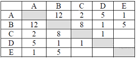
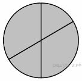
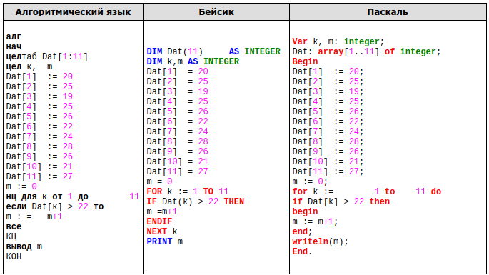
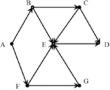
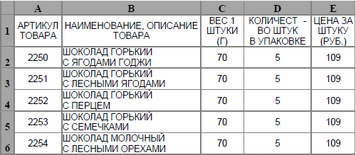
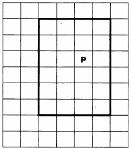
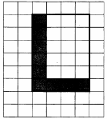

Задание 1
Реферат, набранный на компьютере, содержит 16 страниц, на каждой странице 50 строк, в каждой строке 64 символа. Для кодирования символов используется кодировка Unicode, при которой каждый символ кодируется 16 битами. Определите информационный объём реферата.
- 320 байт
- 100 Kбайт
- 128 Kбайт
- 1 Mбайт
Задание 2
Для какого из приведённых чисел истинно высказывание:
НЕ (Количество букв чётное) И (Первая буква согласная)?
- Омск
- Иваново
- Москва
- Кировск
Задание 3
Между населёнными пунктами A, B, C, D, E построены дороги, протяжённость которых (в километрах) приведена в таблице.

Определите длину кратчайшего пути между пунктами A и B. Передвигаться можно только по дорогам, протяжённость которых указана в таблице.
- 4
- 6
- 10
- 12
Задание 4
В некотором каталоге хранился файл с именем ex.pas. После того как в этом каталоге создали подкаталог Pascal и переместили в него файл ex.pas, полное имя файла стало C:\Olimp\Ivanov\Pascal\ex.pas Каким было полное имя этого файла до перемещения?
- C:\Ivanov\Pascal\ex.pas
- C:\Olimp\Pascal\ex.pas
- C:\Olimp\Ivanov\Pascal\ex.pas
- C:\Olimp\Ivanov\ex.pas
Задание 5
Дан фрагмент электронной таблицы:

| A | B | C | D | |
|---|---|---|---|---|
| 1 | 2 | 4 | 6 | 8 |
| 2 | =С1/А1+1 | =С1-В1 | =D1/A1 |
Какая из формул, приведённых ниже, может быть записана в ячейке А2, чтобы построенная после выполнения вычислений диаграмма по значениям диапазона ячеек A2:D2 соответствовала рисунку?
- =D1-1
- =С1+В1
- =В1/А1
- =А1-1
Задание 6
Исполнитель Чертёжник перемещается на координатной плоскости, оставляя след в виде линии. Чертёжник может выполнять команду Сместиться на (a, b) (где a, b – целые числа), перемещающую Чертёжника из точки с координатами (x, y), в точку с координатами (x+a, y+b). Если числа a, b положительные, значение соответствующей координаты увеличивается, если отрицательные — уменьшается.
Например, если Чертёжник находится в точке с координатами (2, 4), то команда Сместиться на (1, –5) переместит Чертёжника в точку (3, –1).
Запись
Повтори k раз
Команда1 Команда2 Команда3
Конец
означает, что последовательность команд Команда1 Команда2 Команда3 повторится k раз.
Чертёжнику был дан для исполнения следующий алгоритм:
Сместиться на (2, –7)
Повтори 6 раз
Сместиться на (0, 1) Сместиться на (–1, 1) Сместиться на (–2, 2)
Конец
Какую команду надо выполнить Чертёжнику, чтобы вернуться в исходную точку, из которой он начал движение?
- Сместиться на (–18, 24)
- Сместиться на (18, –24)
- Сместиться на (16, –17)
- Сместиться на (–16, 17)
Задание 7
Вася и Петя играли в шпионов и кодировали сообщения собственным шифром. Фрагмент кодовой таблицы приведён ниже:
| К | Л | М | П | О | И |
|---|---|---|---|---|---|
| @+ | ~+ | +@ | @~+/td> | + | ~ |
Расшифруйте сообщение, если известно, что буквы в нём не повторяются:
+ ~ + ~+@@~ +
Запишите в ответе расшифрованное сообщение.
Задание 8
В алгоритме, записанном ниже, используются переменные a и b. Символ «:=» обозначает оператор присваивания, знаки «+», «-», «*» и «/» — соответственно операции сложения, вычитания, умножения и деления. Правила выполнения операций и порядок действий соответствуют правилам арифметики. Определите значение переменной a после выполнения алгоритма:
а := 10
b := 110
b := 110 +b/a
a := b/11*a
В ответе укажите одно целое число — значение переменной a.
Задание 9
Запишите значение переменной y, полученное в результате работы следующей программы. Текст программы приведён на трёх языках программирования.
| Алгоритмический язык | Бейсик | Паскаль |
|---|---|---|
алг нач цел y, i y := 5 нц для i от 1 до 3 y := y + 5*i кц вывод y кон |
DIM i, y AS INTEGER y = 5 FOR i = 1 TO 3 y = y + 5*i NEXT i PRINT y |
Var y,i: integer; Begin y := 5; for i := 1 to 3 do y := y + 5*i; Writeln(y); End. |
Задание10
В таблице Dat хранятся данные о количестве учеников в классах (Dat[1] — количество учеников в первом классе, Dat[2] — во втором и т. д.). Определите, какое число будет напечатано в результате работы следующей программы. Текст программы приведён на трёх языках программирования.

Задание 11
На рисунке изображена схема дорог, связывающих города A, B, C, D, E, F, G. По каждой дороге можно двигаться только в одном направлении, указанном стрелкой. Сколько существует различных путей из города A в город D?

Задание 12
Ниже в табличной форме представлен фрагмент базы данных «Отправление поездов дальнего следования».
| Пункт назначения | Категория поезда | Время в пути | Вокзал |
|---|---|---|---|
| Махачкала | скорый | 39.25 | Павлецкий |
| Махачкала | скорый | 53.53 | Курский |
| Мурманск | скорый | 35.32 | Ленинградский |
| Мурманск | скорый | 32.50 | Ленинградский |
| Мурманск | пассажирский | 37.52 | Ленинградский |
| Мурманск | пассажирский | 37.16 | Ленинградский |
| Назрань | пассажирский | 40.23 | Павлецкий |
| Нальчик | скорый | 34.55 | Казанский |
| Нерюнгри | скорый | 125.41 | Казанский |
| Новосибирск | скорый | 47.30 | Ярославский |
| Нижневартовск | скорый | 52.33 | Казанский |
| Нижний Тагил | фирменный | 31.26 | Ярославский |
Сколько записей в данном фрагменте удовлетворяют условию
(Категория поезда = «скорый») И (Время в пути > 36.00)?
В ответе укажите одно число — искомое количество записей.
Задание 13
Переведите число 147 из десятичной системы счисления в двоичную систему счисления. Сколько единиц содержит полученное число? В ответе укажите одно число — количество единиц.
Задание 14
У исполнителя Квадратор две команды, которым присвоены номера:
1. прибавь 1
2. возведи в квадрат
Первая из них увеличивает число на экране на 1, вторая возводит его во вторую степень. Исполнитель работает только с натуральными числами. Составьте алгоритм получения из числа 3 числа 84, содержащий не более 5 команд. В ответе запишите только номера команд. (Например, 11221 — это алгоритм: прибавь 1, прибавь 1, возведи в квадрат, возведи в квадрат, прибавь 1, который преобразует число 1 в 82.) Если таких алгоритмов более одного, то запишите любой из них.
Задание 15
Файл размером 9 Кбайт передаётся через некоторое соединение со скоростью 1024 бит в секунду. Определите на сколько секунд быстрее можно передать этот же файл через другое соединение со скоростью 1536 бит в секунду. В ответе укажите одно число — количество секунд.
Задание 16
Некоторый алгоритм из одной цепочки символов получает новую цепочку следующим образом. Сначала вычисляется длина исходной цепочки символов; если она чётна, то в начало цепочки символов добавляется символ А, а если нечётна, то последний символ цепочки удаляется. В полученной цепочке символов каждая буква заменяется буквой, следующей за ней в русском алфавите (А — на Б, Б — на В и т. д., а Я — на А). Получившаяся таким образом цепочка является результатом работы алгоритма.
Например, если исходной была цепочка СОН, то результатом работы алгоритма будет цепочка ТП, а если исходной была цепочка УМ, то результатом работы алгоритма будет цепочка БФН.
Дана цепочка символов ПОЛЁТ. Какая цепочка символов получится, если к данной цепочке применить описанный алгоритм дважды (т. е. применить алгоритм к данной цепочке, а затем к результату вновь применить алгоритм)? Русский алфавит: АБВГДЕЁЖЗИЙКЛМНОПРСТУФХЦЧШЩЪЫЬЭЮЯ.
Задание 17
Доступ к файлу rus.doc, находящемуся на сервере obr.org, осуществляется по протоколу https. Фрагменты адреса файла закодированы буквами от А до Ж. Запишите в таблицу последовательность этих букв, кодирующую адрес указанного файла в сети Интернет.
А) obr
Б) /
В) org
Г) ://
Д) doc
Е) rus.
Ж) https
Задание 18
Приведены запросы к поисковому серверу. Для каждого запроса указан его код — соответствующая буква от А до Г. Расположите коды запросов слева направо в порядке возрастания количества страниц, которые нашёл поисковый сервер по каждому запросу. По всем запросам было найдено разное количество страниц. Для обозначения логической операции «ИЛИ» в запросе используется символ «|», а для логической операции «И» — символ «&».
| Код | Запрос |
| A | Солнце | Воздух | Вода |
| Б | (Солнце & Воздух) | Вода |
| В | Солнце & Воздух |
| Г | Солнце & Воздух & Вода |
Задание 19
В электронную таблицу занесли данные о стоимости и комплектации кондитерских изделий. Ниже приведены первые шесть строк таблицы.

В столбце A указан артикул товара; в столбце B — наименование товара; в столбце C — вес единицы товара; в столбце D — количество единиц товара в упаковке; в столбце E — цена за единицу товара.
Всего в электронную таблицу были занесены данные по 1443 наименованиям.
Выполните задание.
Откройте файл с данной электронной таблицей. На основании данных, содержащихся в этой таблице, ответьте на два вопроса.
- Какой процент от общего количества наименований составляют товары стоимостью менее 100 рублей за одну штуку? Ответ на этот вопрос запишите в ячейку F1 таблицы с точностью не менее одного знака после запятой.
- Сколько имеется таких наименований товаров из предложенной таблицы, что они весят менее 100 граммов и упакованы по 20 штук?
Ответ запишите в ячейку F2 таблицы.
Примечание. При решении допускается использование любых возможностей электронных таблиц. Допускаются вычисления при помощи ручки и бумаги. Использование калькуляторов не допускается.
Задание 20
Выберите ОДНО из предложенных ниже заданий: 20.1 или 20.2.
20.1Исполнитель Робот умеет перемещаться по лабиринту, начерченному на плоскости, разбитой на клетки. Между соседними (по сторонам) клетками может стоять стена, через которую Робот пройти не может. У Робота есть девять команд. Четыре команды — это команды-приказы:
вверх вниз влево вправо
При выполнении любой из этих команд Робот перемещается на одну клетку соответственно: вверх ↑ вниз ↓, влево ← , вправо →. Если Робот получит команду передвижения сквозь стену, то он разрушится. Также у Робота есть команда закрасить, при которой закрашивается клетка, в которой Робот находится в настоящий момент.
Ещё четыре команды — это команды проверки условий. Эти команды проверяют, свободен ли путь для Робота в каждом из четырёх возможных направлений:
сверху свободно снизу свободно слева свободно справа свободно
Эти команды можно использовать вместе с условием «если», имеющим следующий вид:
если условие то
последовательность команд
все
Здесь условие — одна из команд проверки условия. Последовательность команд — это одна или несколько любых команд-приказов. Например, для передвижения на одну клетку вправо, если справа нет стенки, и закрашивания клетки можно использовать такой алгоритм:
если справа свободно то
вправо
закрасить
все
В одном условии можно использовать несколько команд проверки условий, применяя логические связки и, или, не, например:
если (справа свободно) и (не снизу свободно) то
вправо
все
Для повторения последовательности команд можно использовать цикл «пока», имеющий следующий вид:
нц пока условие
последовательность команд
кц
Например, для движения вправо, пока это возможно, можно использовать следующий алгоритм:
нц пока справа свободно
вправо
кц
Выполните задание.


На бесконечном поле имеется прямоугольник, ограниченный стенами. Длины сторон прямоугольника неизвестны. Робот находится внутри прямоугольника. На рисунке указан один из возможных способов расположения стен и Робота (Робот обозначен буквой «Р»).
Напишите для Робота алгоритм, закрашивающий клетки прямоугольника, примыкающие к его нижней и верхней стенам. Робот должен закрасить только клетки, удовлетворяющие данному условию. Например, для приведённого выше рисунка Робот должен закрасить следующие клетки (см. рисунок).
Конечное расположение Робота может быть произвольным. Алгоритм должен решать задачу для произвольного размера поля и любого допустимого расположения стен внутри прямоугольного поля. При исполнении алгоритма Робот не должен разрушиться, выполнение алгоритма должно завершиться. Алгоритм может быть выполнен в среде формального исполнителя или записан в текстовом редакторе. Сохраните алгоритм в текстовом файле.
20.2 Напишите программу, которая в последовательности целых чисел определяет их количество и сумму чётных чисел. Программа получает на вход целые числа, количество введённых чисел неизвестно, последовательность чисел заканчивается числом 0 (0 — признак окончания ввода, не входит в последовательность).
Количество чисел не превышает 1000. Введённые числа по модулю не превышают 30 000. Программа должна вывести два числа: длину последовательности и сумму чётных чисел.
Пример работы программы:
| Входные данные | Выходные данные |
|---|---|
|
4 60 15 0 |
3 64 |